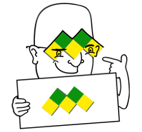

What makes Maatie work.
The algorithm
It would take many words to describe the algorithm. Many many words. Oh yes so many words. Here's a pdf of the paper and a link to some journal. Many many words. It would take many words to describe the algorithm. Many many words. Oh yes so many words. Here's a pdf It would take many words to describe the algorithm. Many many words. Oh yes so many words. Here's a pdf of the paper and a link to some journal. Many many words. of the paper and a link to some journal. Many many words.
Results
There are many ways to describe the reslts. Oh we can see so many useful things after Maatie has run on it. So many many very many useful things. And we can draw charts and graphs to show all of them. So useful. There are many ways to describe the reslts. Oh we can see so many useful things after Maatie has run on it. So many many very many useful things. And we can draw charts and graphs to show all of them. So useful. There are many ways to describe the reslts. Oh we can see so many useful things after Maatie has run on it. So many many very many useful things. And we can draw charts and graphs to show all of them. So useful.
Visulizations
Lets go into detail about visualizing the data. Specific graphs or graphics and explore ways of doing it. So many ways. And an additional paper with more detail on these things. So many many things. Lets go into detail about visualizing the data. Specific graphs or graphics and explore ways of doing it. So many ways. And an additional paper with more detail on these things. So many many things.Lets go into detail about visualizing the data. Specific graphs or graphics and explore ways of doing it. So many ways. And an additional paper with more detail on these things. So many many things.Lets go into detail about visualizing the data. Specific graphs or graphics and explore ways of doing it. So many ways. And an additional paper with more detail on these things. So many many things.

Contributors
- Ben Murrell - Employed by the Medical Research Council (South Africa) and a Phd candidate at the University of Stellenbosch.
- Hugh Murrell - The guy with the funny glasses in the picture.
- Riaz Moola - Currently an undergraduate student at the University of Edinburgh. Designed this website, webserver.
- Alexander Bielovich - Visual Communications student at Vega. Designed the images on this site.